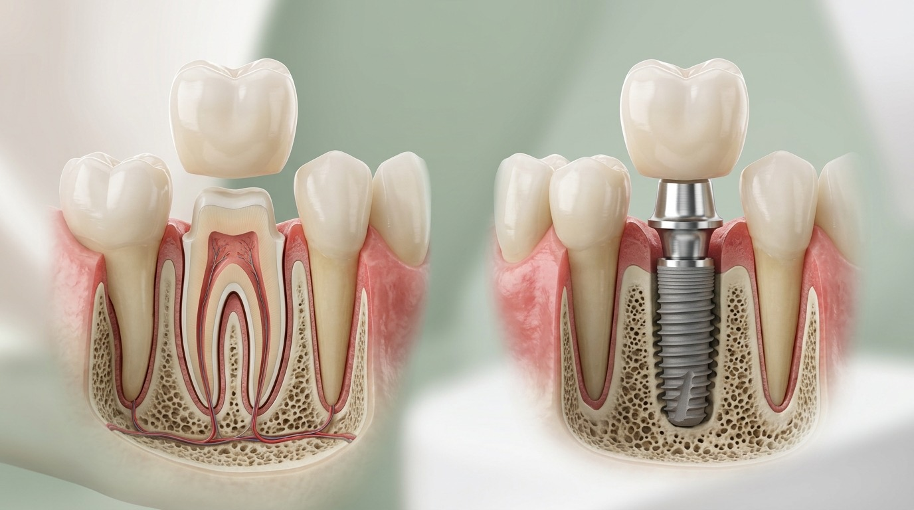
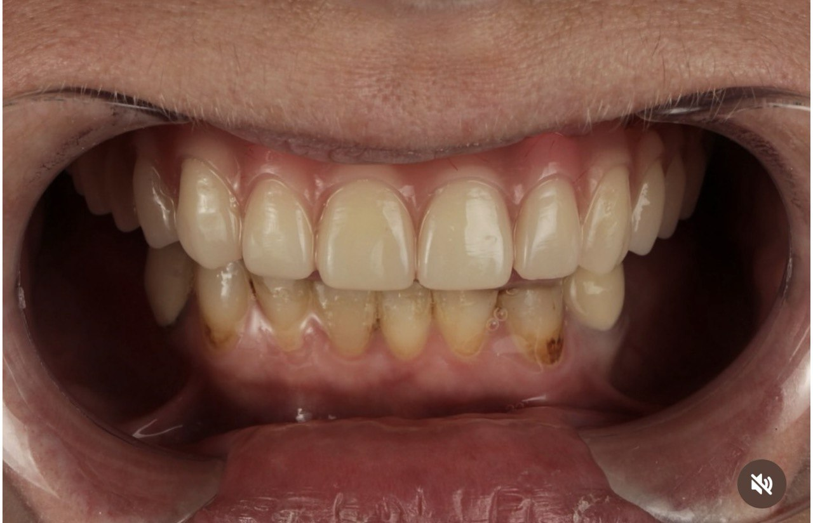
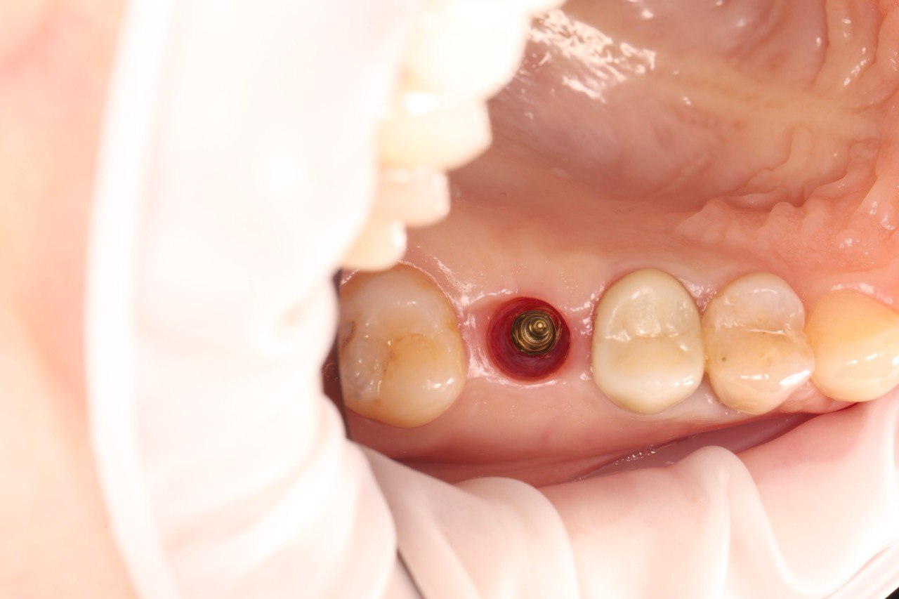

Протезування зубів в Одесі: коронки, вініри, мости та протези на імплантах
Цифрове 3D-сканування 3Shape TRIOS 4 замість зліпочних мас. Індивідуальне моделювання анатомії зуба та узгодження форми посмішки до початку роботи.- Комфортне сканування без нудоти та зліпків
- Узгодження форми та кольору зубів до початку роботи
- Цирконій Multi-layer та прес-кераміка E-max — термін служби 10–15+ років

Види ортопедичного відновлення зубів
Підбираємо конструкцію під ваш клінічний випадок: від одиночної естетичної коронки до повного відновлення зубного ряду
Цирконієві коронки (Multi-layer)
Монолітний діоксид цирконію з плавним градієнтом прозорості. Витримує колосальне жувальне навантаження, біосумісний, не темніє і не викликає алергії. Ідеальний для жувальних та передніх зубів.
Керамічні коронки та вініри E-max
Пресована кераміка (дисилікат літію) з максимальною світлопроникністю, що повністю імітує живу зубну емаль. Золотий стандарт для зони посмішки, усунення сколів, плям та проміжків.
Металокерамічні коронки
Класична перевірена конструкція з литим металевим каркасом та пошаровим нанесенням кераміки. Надійний та бюджетний варіант для відновлення жувальних зубів.
Мостоподібні протези (мости)
Незнімна конструкція для заміщення 1–2 відсутніх зубів із фіксацією на сусідні опорні зуби або імпланти. Повертає повноцінне жування та анатомічну безперервність зубного ряду.
Коронки та протези на імплантах
Встановлення цирконієвих коронок на індивідуальних абатментах із гвинтовою фіксацією. Зберігає сусідні зуби абсолютно неушкодженими. Також реалізуємо повні балочні конструкції All-on-4 / All-on-6.
Знімне та бюгельне протезування
Сучасні акрилові, нейлонові та бюгельні протези на мікрозамках або кламерах при втраті великої кількості або всіх зубів на щелепі. Легкі, адаптивні та комфортні у щоденному використанні.
Стандарти цифрового протезування в Harmony Clinic
Застосовуємо передові технології точного позиціонування та цифрового 3D-моделювання
3D-сканер 3Shape TRIOS 4
Створення надточної цифрової моделі щелеп за 2–3 хвилини без гіпсових зліпків, липких мас та блювотного рефлексу.
CAD/CAM та exocad моделювання
Комп'ютерне проектування коронки з точністю до мікронів. Ідеальне крайове прилягання захищає зуб від затікання слини та вторинного карієсу.
Щадне препарування з уступом
Формуємо плавний круговий уступ під ясенним краєм. Це зберігає максимальний об'єм власних тканин та запобігає посинінню чи травмуванню ясен.
Digital Smile Design (DSD)
Можливість оцінити та узгодити форму, колір та пропорції майбутніх зубів на екрані ще до початку виготовлення постійної конструкції.
Будова коронки: на власному зубі vs на імпланті
Наочна анатомічна схема фіксації ортопедичної коронки при збереженому власному корені та при повній заміні зуба імплантом

Коронка на власному зубі
Застосовується, коли корінь зуба надійний і здоровий, але коронкова частина зруйнована більш ніж на 50%:
- 1. Керамічна або цирконієва коронка: Монолітна естетична конструкція, що повністю повторює анатомію зуба, відновлює жування та захищає зуб від сколів.
- 2. Препарована кукса зуба: Зуб обробляється з круговим уступом під ясна для ідеального крайового прилягання без щілин і затікання бактерій.
- 3. Природний корінь у кістці: Зберігає природний зв'язковий апарат (періодонт), забезпечуючи фізіологічну амортизацію при жуванні.
Коронка на імплантаті
Застосовується при повній втраті зуба для його 100% відновлення без обточування сусідніх здорових зубів:
- 1. Цирконієва коронка з фіксацією: Надміцна коронка, яка фіксується за допомогою гвинтового з'єднання через шахту абатмента або на адгезивний цемент.
- 2. Індивідуальний абатмент: Титановий або цирконієвий перехідний елемент, який з'єднує коронку з імплантом і формує гарний контур ясен.
- 3. Титановий імплант у кістці: Штучний корінь із чистого титану, що повністю інтегрується в щелепну кістку та зупиняє її атрофію.
Який матеріал коронки обрати?
Порівняння основних матеріалів ортопедичних коронок за ключовими параметрами
| Параметр | Металокераміка | Цирконій Multi-layer | Кераміка E-max |
|---|---|---|---|
| Естетика та прозорість | Базова (не пропускає світло) | Висока (градієнт відтінку) | Максимальна (імітація емалі) |
| Міцність на злам | ~400–500 МПа | 800–1200 МПа (екстремальна) | 400–500 МПа (висока) |
| Відсутність металу та синюшності ясен | Ні (містить металевий каркас) | Так (100% біосумісний) | Так (100% прес-кераміка) |
| Точність крайового прилягання | Стандартна ручна | Мікронна (фрезерування CAD/CAM) | Мікронна (фрезерування / пресування) |
| Рекомендована зона застосування | Жувальні зуби (бічні) | Жувальні, передні, мости, імпланти | Зона посмішки, вініри, фронтальні |
| Орієнтовний термін служби | 7–10 років | 10–15+ років | 10–15+ років |
Результати протезування: До / Після
Реальні клінічні випадки відновлення зубів коронками, вінірами та мостоподібними конструкціями




Ціни на протезування зубів
Фіксована вартість «під ключ» без прихованих платежів: включає 3D-сканування, виготовлення, примірку та фіксацію
Етапи протезування зубів
5 чітких кроків від первинного 3D-сканування до фіксації постійної конструкції
Консультація та 3D-скан
Огляд, прицільна діагностика, цифрове 3D-сканування щелепи сканером 3Shape TRIOS 4. Складання плану лікування.
Підготовка зуба
Щадне препарування з формуванням кругового уступу. Встановлення тимчасової коронки для захисту зуба.
CAD/CAM виготовлення
Лабораторне комп'ютерне моделювання та прецизійне фрезерування коронки з монолітного цирконію або прес-кераміки (5–7 днів).
Примірка та контроль
Перевірка точності посадки, контактних пунктів із сусідніми зубами, кольору та прикусу.
Фінішна фіксація
Надійна адгезивна фіксація на постійний цемент, полірування меж та рекомендації щодо щоденного догляду.
Хто виконує ваше протезування
Малюкін Андрій Віталійович
Спеціалізується на естетичному та функціональному протезуванні за цифровим CAD/CAM протоколом. Особисто проводить 3D-сканування, моделювання та фінішну фіксацію коронок, вінірів та протезів на імплантах.
Часті запитання щодо протезування
Відповідаємо на найпоширеніші запитання пацієнтів щодо протезування, вибору матеріалів та догляду
Наша локація в Одесі
м. Одеса, вул. Новаторів, 1А (Київський район / Таїрова / Черемушки)